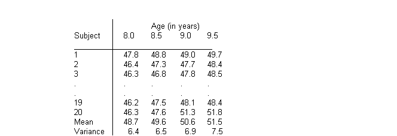
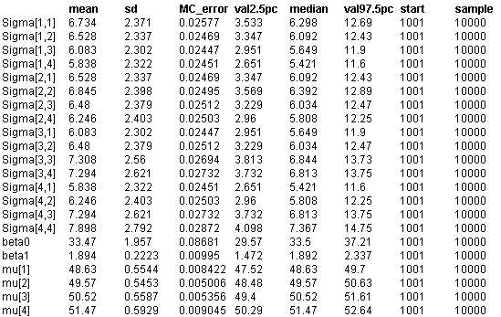

![[jaws0]](jaws0.bmp) Jaws: repeated measures analysis
Jaws: repeated measures analysis
of variance
Elston and Grizzle (1962) present repeated measurements of ramus (jaw) bone height on a
cohort of 20 boys over an 18 month period:

Interest focuses on describing the average growth curve of the ramus bone. The 4
measurements
Y
i
= {Y
i1
, Y
i2
, Y
i3
, Y
i4
} for each child i are assumed to be correlated and follow a multivariate normal (MVN) distribution with unknown population mean vector
m
and precision matrix
W
. That is
Y
i
~ MVN(
m
,
W
)
The following location models for the population mean
m
were fitted in turn:
E(
m
i
) =
b
0
Constant height
E(
m
i
) =
b
0
+
b
1
x
j
Linear growth curve
E(
m
i
) =
b
0
+
b
1
x
j
+
b
2
x
j
2
Quadratic growth curve
where x
j
= age at jth measurement. Non-informative independent normal priors were specified for the regression coefficients
b
0
,
b
1
, and
b
2
. The population precision matrix
W
was assumed to follow a Wishart(R,
r
) distribution. To represent vague prior knowledge, we chose the the degrees of freedom
r
for this distribution to be as small as possible (i.e. 4, the rank of
W
). The scale matrix R was specified as a 4x4 diag(1) matrix which represents an assessment of the order of magnitude of the covariance matrix
W
-1
for
Y
i
(see subsection on the use of the Wishart distribution in the "Multivariate normal nodes'' section of the Classic BUGS manual (version 0.50). Note that except for cases with very few individuals, the choice of R has little effect on the posterior estimate of
W
-1
(Lindley, 1970).
BUGS language for the Jaws example
model
{
beta0 ~ dnorm(0.0, 0.001)
beta1 ~ dnorm(0.0, 0.001)
for (i in 1:N) {
Y[i, 1:M] ~ dmnorm(mu[], Omega[ , ])
}
for(j in 1:M) {
mu[j] <- beta0 + beta1* age[j]
}
Omega[1 : M , 1 : M] ~ dwish(R[ , ], 4)
Sigma[1 : M , 1 : M] <- inverse(Omega[ , ])
}
Data
( click to open )
Inits for chain 1
Inits for chain 2
( click to open )
Results
A 1000 update burn in followed by a further 10000 updates gave the parameter estimates
